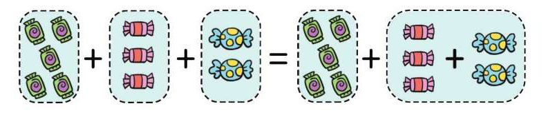

整数加减法
整数加法：
加法交换律：a＋b=b＋a
加法结合律：a＋b＋c=a＋（b＋c）

整数减法：
连减的性质：a-b-c=a-（b＋c）
整数乘除法
整数乘法：
交换律：a×b=b×a
结合律：（a×b）×c=a×（b×c）
分配律：（a＋b）×c=a×b＋b×c
整数除法：
连除的性质：
a÷b÷c=a÷（b×c）（b≠0，c≠0）
整数的四则运算
没有括号：
只有加减或乘除，从左往右依次算；加减乘除若都有，先乘除来后加减。
有括号：
小括号内优先算，算完再算括号外。
小数的运算
小数加减法：
小数点对齐，最右边算起；满十则进一，退一当作十。
小数乘法：
末位要对齐，先当整数算，算完再点小数点。
小数除法：
小数点对齐，先当整数算；末位有余数，余数后添0；商若不够除，用0来占位。
分数的运算
分数加减法：
同分母分数相加减时，分母不变，分子相加减；异分母分数相加减时，先通分再运算。
分数乘法：
先约分，再计算。分数乘整数时，以分子乘整数的积作新分子，分母不变；分数乘分数时，分子乘分子，分母乘分母。
分数除法：
一个数除以另一个数（0除外），等于一个数乘另一个数的倒数。
巧算方法
凑十法、凑整法、补数计算法、凑尾数减法、提取公因式法、分解法等。